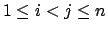
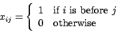
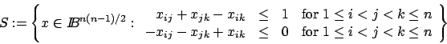
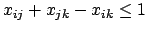
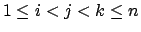
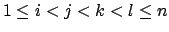
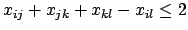
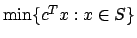
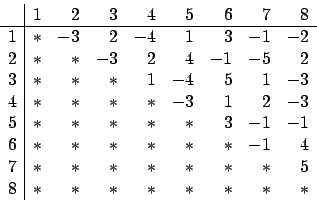

Due: Friday, March 16, 2007.
Due: Tuesday, March 20, 2007.
Penalty for late homeworks: 10% for each day or part of a day.
Given n objects,
we want to find an ordering (or permutation) of the objects.
We can model the set of orderings by introducing
variables xij for

defined as follows:

Given two objects i and j, either i is before j
or j is before i.
The set of feasible solutions can be written as

The inequalities are called triangle inequalities.
- 1.
- Show that S is full dimensional.
- 2.
- Show that the triangle inequality

defines a facet of conv(S) for any
.
- 3.
- Let
.
Show that the valid inequality

is
not a facet of conv(S).
- 4.
- Solve the integer program

with n=8 using a cutting plane
algorithm, adding violated triangle inequalities as cutting planes.
The objective function coefficients c are as follows:

What is the optimal ordering?
(Hint: the optimal value is -22.)
You can download an AMPL model file
and a data file for this problem.
Some hints about using AMPL
are now available, including methods for adding constraints
to this linear ordering problem.
John E. Mitchell
2007-03-02